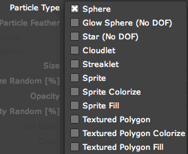
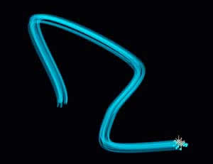

Particle tab> Particle Type
The Particle Type is the building block of Trapcode Particular. By default, the plug-in uses a spherical particle which is called (surprise!) Sphere. Let's take a look at the other Particle Types.

The full Particle Type list.
The Particle Types
There are 11 different Particle Types. The list below gives a basic definition, shows the default particle appearance, and points to some controls to use with that particle type.
|
 |
|
Sprite
Use any image node as a particle. A Sprite particle's orientation is always locked to the camera. Read more about Custom Particles. |
|
Sprite Colorize
Same as Sprite, but adds the ability to colorize the particles using lightness values from the Sprite's image. Read more about Custom Particles. |
|
Sprite Fill
Same as Sprite, but adds the ability to colorize the particles by filling alpha. Read more about Custom Particles. |
|
Textured Polygon
New particle type. Use any image node as a particle, and give that image any 3D orientation. Control with the Particle> Texture group. |
|
Textured Polygon Colorize
New particle type. Same as Textured Polygon, but adds the ability to colorize the particles using lightness values. Control with the Particle> Texture group. |
|
Textured Polygon Fill
New particle type. Same as Textured Polygon, but adds the ability to colorize the particles by filling alpha. Control with the Particle> Texture group.
|
|
Sphere, Glow Sphere, Star types
The Sphere is the default Particle Type option. It is a simple round dot that lends itself well to particle systems, which are often use spherical units. Dust, snow and rain are all common examples of rounded particle systems.
Glow Sphere is a glowing version of the sphere shape.
Star is a simple four-pointed shape that has a glow applied.
Left to right, a Sphere, Glow Sphere and Star.
Cloudlet type
A Cloudlet is a randomized shape that looks like a small cloud. The Cloudlet is useful for creating cloud or smoke effects like smoke trails, puffy clouds and vapor. A Cloudlet looks like smoke when its color is dark gray, and like clouds when its color is white.
Choosing the Cloudlet type enables the Shading tab's Shadowlet Settings group, which adds directional shading to the clouds to help provide a sense of volume. The Shadowlet Settings group provides shadows for other Particle Types, but it is integral to using the Cloudlet for the creation of realistic-looking clouds and smoke.
When used with the Shading tab> Shadowlet Settings, the Cloudlet can create a similar particle style that we call a 'smokelet'. Do this by adjusting the options for Color, Color Strength and Opacity of the Shadowlet light. The cloudlet particle can make smoke looks more realistic.

Left to right, a single Cloudlet, group of Cloudlets.
Streaklet type
A Streaklet is a long-exposure light painting effect. You can create very interesting animations with Streaklet. Check out the long-exposure effect on the Streaklet page.

Left to right, the Streaklet and its 'Light Exposure' effect
Sprite type
The Sprite particle uses a custom image loaded into Particular. You need to select a custom image, called a 'texture', by going into the Particle tab> Texture group and choosing an image in the Layer pop-up. The image can be a still image or an animated movie.
Sprites always orient towards the camera. This is very useful in some cases. However, in other cases you won't want the image to orient to the camera, but instead would prefer it to behave like a regular 3D image. This is why the new Textured Polygon type was developed.
When you first apply Sprite, you won't see anything appear. This is because Sprite needs a image to sample from. In our example below, Sprite is using a crescent-shaped grayscale image.
Left to right, the Sprite and its loaded image.
Textured Polygon type
Like the Sprite, the Textured Polygon particle uses a custom image loaded into Particular, which can be a still image or an animated movie. While Sprites types face the 3D camera and don't move independently, Textured Polygons are objects with their own independent 3D rotation and space.
The Textured Polygon doesn't orient to the
After Effects 3D camera. Instead you can see the particles from different directions and from all sides, and you can see their thickness change when rotated. Textured Polygon has controls for rotation and rotational speed on all three spatial axes. It will "stay put" when you orbit the camera around it. This particle type acts more like a regular 3D image.
When you first apply Textured Polygon, you won't see anything appear. This is because Textured Polygon needs an image to sample from. In our example below, Textured is using a triangle-shaped image.
Left to right, the Textured Polygon and its loaded image.
Sprite Colorize, Texture Polygon Colorize types
Colorize is a colorizing mode that uses lightness values to color the particles.
Many Sprite Colorize particles.
Sprite Fill, Texture Polygon Fill types
Fill is also a colorizing mode. This mode only fills the alpha channel of the particles with color.
Many Textured Polygon Fill particles.